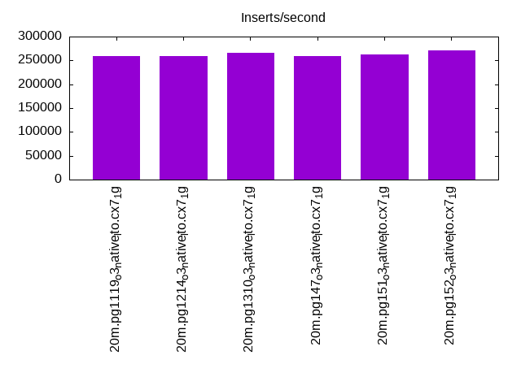
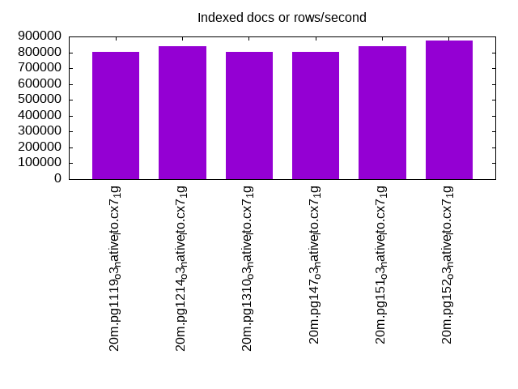
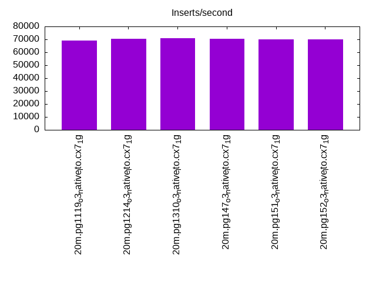
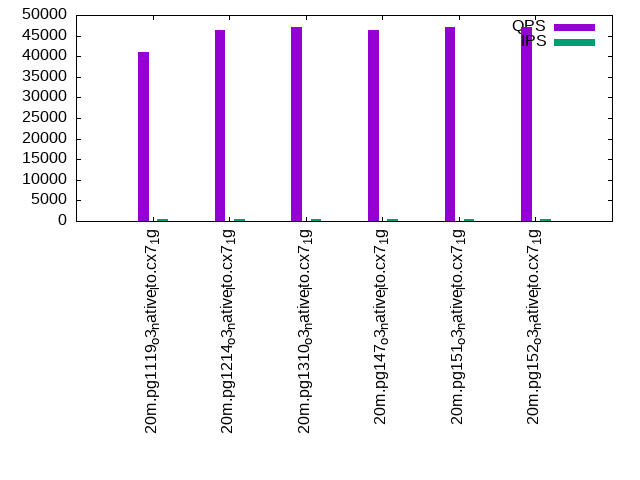
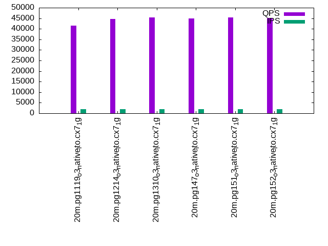
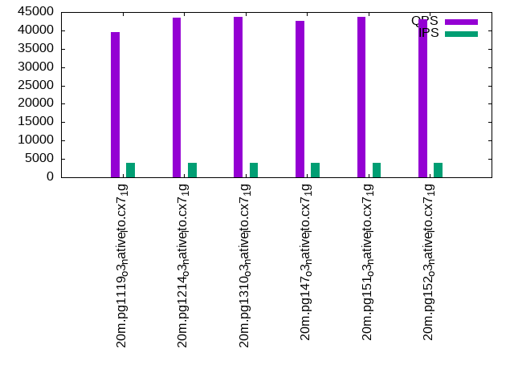

This is a report for the insert benchmark with 20M docs and 4 client(s). It is generated by scripts (bash, awk, sed) and Tufte might not be impressed. An overview of the insert benchmark is here and a short update is here. Below, by DBMS, I mean DBMS+version.config. An example is my8020.c10b40 where my means MySQL, 8020 is version 8.0.20 and c10b40 is the name for the configuration file.
The test server has 8 AMD cores, 16G RAM and an NVMe SSD. It is described here as the Beelink. The benchmark was run with 4 clients and there were 1 or 2 connections per client (1 for queries, 1 for inserts). It uses 4 tables, 1 per client. It loads 20M rows without secondary indexes, creates secondary indexes, loads another 20M rows then does 3 read+write tests for one hour each that do queries as fast as possible with 100, 500 and then 1000 writes/second/client concurrent with the queries. The database is cached by the OS but not by the database. Clients and the DBMS share one server. The per-database configs are in the per-database subdirectories here.
The tested DBMS are:
The numbers are inserts/s for l.i0 and l.i1, indexed docs (or rows) /s for l.x and queries/s for q*.2. The values are the average rate over the entire test for inserts (IPS) and queries (QPS). The range of values for IPS and QPS is split into 3 parts: bottom 25%, middle 50%, top 25%. Values in the bottom 25% have a red background, values in the top 25% have a green background and values in the middle have no color. A gray background is used for values that can be ignored because the DBMS did not sustain the target insert rate. Red backgrounds are not used when the minimum value is within 80% of the max value.
| dbms | l.i0 | l.x | l.i1 | q100.1 | q500.1 | q1000.1 |
|---|---|---|---|---|---|---|
| 20m.pg1119_o3_native_lto.cx7_1g | 259740 | 804000 | 69204 | 41058 | 41410 | 39566 |
| 20m.pg1214_o3_native_lto.cx7_1g | 259740 | 837500 | 70422 | 46289 | 44769 | 43384 |
| 20m.pg1310_o3_native_lto.cx7_1g | 266667 | 804000 | 70922 | 47154 | 45410 | 43714 |
| 20m.pg147_o3_native_lto.cx7_1g | 259740 | 804000 | 70671 | 46376 | 44798 | 42522 |
| 20m.pg151_o3_native_lto.cx7_1g | 263158 | 837500 | 70175 | 47184 | 45508 | 43644 |
| 20m.pg152_o3_native_lto.cx7_1g | 270270 | 873913 | 70175 | 47035 | 45155 | 43029 |
This table has relative throughput, throughput for the DBMS relative to the DBMS in the first line, using the absolute throughput from the previous table.
| dbms | l.i0 | l.x | l.i1 | q100.1 | q500.1 | q1000.1 |
|---|---|---|---|---|---|---|
| 20m.pg1119_o3_native_lto.cx7_1g | 1.00 | 1.00 | 1.00 | 1.00 | 1.00 | 1.00 |
| 20m.pg1214_o3_native_lto.cx7_1g | 1.00 | 1.04 | 1.02 | 1.13 | 1.08 | 1.10 |
| 20m.pg1310_o3_native_lto.cx7_1g | 1.03 | 1.00 | 1.02 | 1.15 | 1.10 | 1.10 |
| 20m.pg147_o3_native_lto.cx7_1g | 1.00 | 1.00 | 1.02 | 1.13 | 1.08 | 1.07 |
| 20m.pg151_o3_native_lto.cx7_1g | 1.01 | 1.04 | 1.01 | 1.15 | 1.10 | 1.10 |
| 20m.pg152_o3_native_lto.cx7_1g | 1.04 | 1.09 | 1.01 | 1.15 | 1.09 | 1.09 |
This lists the average rate of inserts/s for the tests that do inserts concurrent with queries. For such tests the query rate is listed in the table above. The read+write tests are setup so that the insert rate should match the target rate every second. Cells that are not at least 95% of the target have a red background to indicate a failure to satisfy the target.
| dbms | q100.1 | q500.1 | q1000.1 |
|---|---|---|---|
| pg1119_o3_native_lto.cx7_1g | 399 | 1994 | 3989 |
| pg1214_o3_native_lto.cx7_1g | 399 | 1994 | 3989 |
| pg1310_o3_native_lto.cx7_1g | 399 | 1993 | 3989 |
| pg147_o3_native_lto.cx7_1g | 399 | 1994 | 3989 |
| pg151_o3_native_lto.cx7_1g | 399 | 1994 | 3989 |
| pg152_o3_native_lto.cx7_1g | 399 | 1994 | 3989 |
| target | 400 | 2000 | 4000 |
l.i0: load without secondary indexes. Graphs for performance per 1-second interval are here.
Average throughput:
Insert response time histogram: each cell has the percentage of responses that take <= the time in the header and max is the max response time in seconds. For the max column values in the top 25% of the range have a red background and in the bottom 25% of the range have a green background. The red background is not used when the min value is within 80% of the max value.
| dbms | 256us | 1ms | 4ms | 16ms | 64ms | 256ms | 1s | 4s | 16s | gt | max |
|---|---|---|---|---|---|---|---|---|---|---|---|
| pg1119_o3_native_lto.cx7_1g | 99.942 | 0.057 | 0.012 | ||||||||
| pg1214_o3_native_lto.cx7_1g | 99.948 | 0.052 | 0.012 | ||||||||
| pg1310_o3_native_lto.cx7_1g | 99.936 | 0.064 | 0.012 | ||||||||
| pg147_o3_native_lto.cx7_1g | 99.941 | 0.059 | 0.011 | ||||||||
| pg151_o3_native_lto.cx7_1g | 0.001 | 99.941 | 0.058 | 0.011 | |||||||
| pg152_o3_native_lto.cx7_1g | 0.005 | 99.933 | 0.062 | 0.001 | 0.026 |
Performance metrics for the DBMS listed above. Some are normalized by throughput, others are not. Legend for results is here.
ips qps rps rmbps wps wmbps rpq rkbpq wpi wkbpi csps cpups cspq cpupq dbgb1 dbgb2 rss maxop p50 p99 tag 259740 0 0 0.0 502.7 124.4 0.000 0.000 0.002 0.490 26076 70.2 0.100 22 1.9 5.2 0.0 0.012 78915 57436 20m.pg1119_o3_native_lto.cx7_1g 259740 0 0 0.0 573.9 117.0 0.000 0.000 0.002 0.461 25901 70.6 0.100 22 1.9 5.2 0.0 0.012 77216 10688 20m.pg1214_o3_native_lto.cx7_1g 266667 0 0 0.0 492.0 120.6 0.000 0.000 0.002 0.463 26516 69.2 0.099 21 1.9 5.2 0.9 0.012 80912 72043 20m.pg1310_o3_native_lto.cx7_1g 259740 0 0 0.0 477.0 118.5 0.000 0.000 0.002 0.467 26257 70.3 0.101 22 1.9 5.2 1.0 0.011 77416 46849 20m.pg147_o3_native_lto.cx7_1g 263158 0 0 0.0 498.1 120.4 0.000 0.000 0.002 0.469 26166 69.4 0.099 21 1.9 5.2 1.0 0.011 80613 24373 20m.pg151_o3_native_lto.cx7_1g 270270 0 0 0.0 506.9 125.2 0.000 0.000 0.002 0.474 27164 70.7 0.101 21 1.9 5.2 1.0 0.026 82436 11188 20m.pg152_o3_native_lto.cx7_1g
l.x: create secondary indexes.
Average throughput:
Performance metrics for the DBMS listed above. Some are normalized by throughput, others are not. Legend for results is here.
ips qps rps rmbps wps wmbps rpq rkbpq wpi wkbpi csps cpups cspq cpupq dbgb1 dbgb2 rss maxop p50 p99 tag 804000 0 0 0.0 585.5 241.2 0.000 0.000 0.001 0.307 2714 37.3 0.003 4 3.7 8.6 0.0 0.004 NA NA 20m.pg1119_o3_native_lto.cx7_1g 837500 0 0 0.0 728.7 163.3 0.000 0.000 0.001 0.200 1499 40.2 0.002 4 3.7 8.6 0.0 0.003 NA NA 20m.pg1214_o3_native_lto.cx7_1g 804000 0 0 0.0 509.0 217.3 0.000 0.000 0.001 0.277 2180 37.2 0.003 4 3.7 8.6 0.0 0.004 NA NA 20m.pg1310_o3_native_lto.cx7_1g 804000 0 0 0.0 479.0 207.1 0.000 0.000 0.001 0.264 2296 37.0 0.003 4 3.7 8.6 0.0 0.003 NA NA 20m.pg147_o3_native_lto.cx7_1g 837500 0 0 0.0 552.7 218.8 0.000 0.000 0.001 0.268 2042 40.4 0.002 4 3.7 8.6 0.0 0.004 NA NA 20m.pg151_o3_native_lto.cx7_1g 873913 0 0 0.0 586.3 235.9 0.000 0.000 0.001 0.276 1909 39.8 0.002 4 3.7 8.6 0.0 0.004 NA NA 20m.pg152_o3_native_lto.cx7_1g
l.i1: continue load after secondary indexes created. Graphs for performance per 1-second interval are here.
Average throughput:
Insert response time histogram: each cell has the percentage of responses that take <= the time in the header and max is the max response time in seconds. For the max column values in the top 25% of the range have a red background and in the bottom 25% of the range have a green background. The red background is not used when the min value is within 80% of the max value.
| dbms | 256us | 1ms | 4ms | 16ms | 64ms | 256ms | 1s | 4s | 16s | gt | max |
|---|---|---|---|---|---|---|---|---|---|---|---|
| pg1119_o3_native_lto.cx7_1g | 99.004 | 0.873 | 0.122 | nonzero | 0.079 | ||||||
| pg1214_o3_native_lto.cx7_1g | 99.044 | 0.836 | 0.120 | 0.054 | |||||||
| pg1310_o3_native_lto.cx7_1g | 99.078 | 0.789 | 0.132 | 0.001 | 0.085 | ||||||
| pg147_o3_native_lto.cx7_1g | 99.047 | 0.835 | 0.117 | 0.001 | 0.072 | ||||||
| pg151_o3_native_lto.cx7_1g | 99.010 | 0.881 | 0.109 | 0.054 | |||||||
| pg152_o3_native_lto.cx7_1g | 98.992 | 0.898 | 0.109 | 0.001 | 0.075 |
Performance metrics for the DBMS listed above. Some are normalized by throughput, others are not. Legend for results is here.
ips qps rps rmbps wps wmbps rpq rkbpq wpi wkbpi csps cpups cspq cpupq dbgb1 dbgb2 rss maxop p50 p99 tag 69204 0 48 2.4 53443.4 979.7 0.001 0.035 0.772 14.497 23958 64.8 0.346 75 7.7 23.8 0.0 0.079 17537 4197 20m.pg1119_o3_native_lto.cx7_1g 70422 0 154 1.9 54580.2 999.0 0.002 0.027 0.775 14.526 24688 65.2 0.351 74 7.6 23.6 0.0 0.054 17973 4445 20m.pg1214_o3_native_lto.cx7_1g 70922 0 113 1.4 55529.8 1021.1 0.002 0.020 0.783 14.744 24839 65.3 0.350 74 7.6 23.9 0.0 0.085 18128 5597 20m.pg1310_o3_native_lto.cx7_1g 70671 0 110 0.7 54263.7 1008.3 0.002 0.010 0.768 14.609 24853 65.8 0.352 74 7.6 24.0 0.0 0.072 18052 6192 20m.pg147_o3_native_lto.cx7_1g 70175 0 110 0.7 54128.1 1008.8 0.002 0.010 0.771 14.720 25506 65.8 0.363 75 7.6 24.0 0.0 0.054 17889 5444 20m.pg151_o3_native_lto.cx7_1g 70175 0 116 0.7 54813.2 1010.9 0.002 0.011 0.781 14.751 25585 65.7 0.365 75 7.6 23.9 0.0 0.075 17930 5643 20m.pg152_o3_native_lto.cx7_1g
q100.1: range queries with 100 insert/s per client. Graphs for performance per 1-second interval are here.
Average throughput:
Query response time histogram: each cell has the percentage of responses that take <= the time in the header and max is the max response time in seconds. For max values in the top 25% of the range have a red background and in the bottom 25% of the range have a green background. The red background is not used when the min value is within 80% of the max value.
| dbms | 256us | 1ms | 4ms | 16ms | 64ms | 256ms | 1s | 4s | 16s | gt | max |
|---|---|---|---|---|---|---|---|---|---|---|---|
| pg1119_o3_native_lto.cx7_1g | 99.974 | 0.020 | 0.006 | nonzero | 0.011 | ||||||
| pg1214_o3_native_lto.cx7_1g | 99.983 | 0.011 | 0.006 | nonzero | 0.009 | ||||||
| pg1310_o3_native_lto.cx7_1g | 99.983 | 0.012 | 0.005 | nonzero | 0.013 | ||||||
| pg147_o3_native_lto.cx7_1g | 99.982 | 0.012 | 0.006 | nonzero | 0.011 | ||||||
| pg151_o3_native_lto.cx7_1g | 99.984 | 0.011 | 0.004 | nonzero | 0.010 | ||||||
| pg152_o3_native_lto.cx7_1g | 99.983 | 0.011 | 0.005 | nonzero | 0.010 |
Insert response time histogram: each cell has the percentage of responses that take <= the time in the header and max is the max response time in seconds. For max values in the top 25% of the range have a red background and in the bottom 25% of the range have a green background. The red background is not used when the min value is within 80% of the max value.
| dbms | 256us | 1ms | 4ms | 16ms | 64ms | 256ms | 1s | 4s | 16s | gt | max |
|---|---|---|---|---|---|---|---|---|---|---|---|
| pg1119_o3_native_lto.cx7_1g | 99.736 | 0.264 | 0.011 | ||||||||
| pg1214_o3_native_lto.cx7_1g | 99.646 | 0.354 | 0.011 | ||||||||
| pg1310_o3_native_lto.cx7_1g | 99.868 | 0.132 | 0.008 | ||||||||
| pg147_o3_native_lto.cx7_1g | 99.132 | 0.868 | 0.011 | ||||||||
| pg151_o3_native_lto.cx7_1g | 99.521 | 0.479 | 0.011 | ||||||||
| pg152_o3_native_lto.cx7_1g | 99.229 | 0.771 | 0.011 |
Performance metrics for the DBMS listed above. Some are normalized by throughput, others are not. Legend for results is here.
ips qps rps rmbps wps wmbps rpq rkbpq wpi wkbpi csps cpups cspq cpupq dbgb1 dbgb2 rss maxop p50 p99 tag 399 41058 1 0.0 1292.6 15.3 0.000 0.000 3.241 39.215 156741 50.4 3.818 98 7.9 20.3 0.0 0.011 10360 8647 20m.pg1119_o3_native_lto.cx7_1g 399 46289 0 0.0 1269.7 15.7 0.000 0.000 3.184 40.392 176639 50.5 3.816 87 7.7 20.1 0.0 0.009 11622 10485 20m.pg1214_o3_native_lto.cx7_1g 399 47154 12 0.1 1322.5 15.8 0.000 0.002 3.318 40.484 180022 50.5 3.818 86 7.8 20.0 0.0 0.013 11742 10648 20m.pg1310_o3_native_lto.cx7_1g 399 46376 16 0.1 1291.8 15.5 0.000 0.002 3.239 39.747 176841 50.5 3.813 87 7.8 23.2 0.0 0.011 11688 10277 20m.pg147_o3_native_lto.cx7_1g 399 47184 9 0.1 1308.4 15.6 0.000 0.001 3.281 40.046 179933 50.5 3.813 86 7.8 23.1 0.0 0.010 11728 10548 20m.pg151_o3_native_lto.cx7_1g 399 47035 10 0.1 1313.3 15.7 0.000 0.001 3.293 40.251 179317 50.5 3.812 86 7.8 23.2 0.0 0.010 11752 10628 20m.pg152_o3_native_lto.cx7_1g
q500.1: range queries with 500 insert/s per client. Graphs for performance per 1-second interval are here.
Average throughput:
Query response time histogram: each cell has the percentage of responses that take <= the time in the header and max is the max response time in seconds. For max values in the top 25% of the range have a red background and in the bottom 25% of the range have a green background. The red background is not used when the min value is within 80% of the max value.
| dbms | 256us | 1ms | 4ms | 16ms | 64ms | 256ms | 1s | 4s | 16s | gt | max |
|---|---|---|---|---|---|---|---|---|---|---|---|
| pg1119_o3_native_lto.cx7_1g | 99.943 | 0.038 | 0.017 | 0.002 | nonzero | 0.035 | |||||
| pg1214_o3_native_lto.cx7_1g | 99.951 | 0.031 | 0.017 | 0.002 | nonzero | 0.022 | |||||
| pg1310_o3_native_lto.cx7_1g | 99.954 | 0.027 | 0.017 | 0.002 | nonzero | 0.021 | |||||
| pg147_o3_native_lto.cx7_1g | 99.945 | 0.034 | 0.018 | 0.002 | nonzero | 0.047 | |||||
| pg151_o3_native_lto.cx7_1g | 99.951 | 0.030 | 0.017 | 0.002 | nonzero | 0.019 | |||||
| pg152_o3_native_lto.cx7_1g | 99.948 | 0.033 | 0.018 | 0.001 | nonzero | 0.020 |
Insert response time histogram: each cell has the percentage of responses that take <= the time in the header and max is the max response time in seconds. For max values in the top 25% of the range have a red background and in the bottom 25% of the range have a green background. The red background is not used when the min value is within 80% of the max value.
| dbms | 256us | 1ms | 4ms | 16ms | 64ms | 256ms | 1s | 4s | 16s | gt | max |
|---|---|---|---|---|---|---|---|---|---|---|---|
| pg1119_o3_native_lto.cx7_1g | 95.710 | 4.225 | 0.065 | 0.025 | |||||||
| pg1214_o3_native_lto.cx7_1g | 96.304 | 3.597 | 0.099 | 0.025 | |||||||
| pg1310_o3_native_lto.cx7_1g | 94.178 | 5.682 | 0.140 | 0.033 | |||||||
| pg147_o3_native_lto.cx7_1g | 95.296 | 4.639 | 0.065 | 0.025 | |||||||
| pg151_o3_native_lto.cx7_1g | 95.301 | 4.624 | 0.075 | 0.023 | |||||||
| pg152_o3_native_lto.cx7_1g | 97.893 | 2.083 | 0.024 | 0.022 |
Performance metrics for the DBMS listed above. Some are normalized by throughput, others are not. Legend for results is here.
ips qps rps rmbps wps wmbps rpq rkbpq wpi wkbpi csps cpups cspq cpupq dbgb1 dbgb2 rss maxop p50 p99 tag 1994 41410 19 0.6 5983.7 59.3 0.000 0.014 3.000 30.436 156706 51.9 3.784 100 9.4 18.5 0.1 0.035 10520 8822 20m.pg1119_o3_native_lto.cx7_1g 1994 44769 31 0.7 5973.8 59.3 0.001 0.015 2.995 30.464 169479 51.9 3.786 93 9.3 18.5 0.0 0.022 11284 9877 20m.pg1214_o3_native_lto.cx7_1g 1993 45410 20 0.4 5995.8 59.4 0.000 0.008 3.008 30.518 171899 52.0 3.786 92 9.4 18.4 0.0 0.021 11304 10149 20m.pg1310_o3_native_lto.cx7_1g 1994 44798 46 0.3 5993.0 59.4 0.001 0.008 3.005 30.495 169454 52.0 3.783 93 9.4 20.8 0.0 0.047 11334 9302 20m.pg147_o3_native_lto.cx7_1g 1994 45508 44 0.3 5995.6 59.4 0.001 0.007 3.006 30.505 172074 52.0 3.781 91 9.4 20.7 0.0 0.019 11400 9321 20m.pg151_o3_native_lto.cx7_1g 1994 45155 55 0.4 5994.7 59.4 0.001 0.009 3.006 30.508 170838 52.0 3.783 92 9.4 20.7 0.0 0.020 11380 9526 20m.pg152_o3_native_lto.cx7_1g
q1000.1: range queries with 1000 insert/s per client. Graphs for performance per 1-second interval are here.
Average throughput:
Query response time histogram: each cell has the percentage of responses that take <= the time in the header and max is the max response time in seconds. For max values in the top 25% of the range have a red background and in the bottom 25% of the range have a green background. The red background is not used when the min value is within 80% of the max value.
| dbms | 256us | 1ms | 4ms | 16ms | 64ms | 256ms | 1s | 4s | 16s | gt | max |
|---|---|---|---|---|---|---|---|---|---|---|---|
| pg1119_o3_native_lto.cx7_1g | 99.881 | 0.089 | 0.027 | 0.003 | nonzero | nonzero | 0.090 | ||||
| pg1214_o3_native_lto.cx7_1g | 99.909 | 0.064 | 0.024 | 0.003 | nonzero | 0.063 | |||||
| pg1310_o3_native_lto.cx7_1g | 99.904 | 0.069 | 0.025 | 0.002 | nonzero | 0.020 | |||||
| pg147_o3_native_lto.cx7_1g | 99.876 | 0.091 | 0.029 | 0.003 | nonzero | 0.063 | |||||
| pg151_o3_native_lto.cx7_1g | 99.893 | 0.078 | 0.027 | 0.002 | nonzero | 0.021 | |||||
| pg152_o3_native_lto.cx7_1g | 99.897 | 0.074 | 0.026 | 0.002 | nonzero | 0.036 |
Insert response time histogram: each cell has the percentage of responses that take <= the time in the header and max is the max response time in seconds. For max values in the top 25% of the range have a red background and in the bottom 25% of the range have a green background. The red background is not used when the min value is within 80% of the max value.
| dbms | 256us | 1ms | 4ms | 16ms | 64ms | 256ms | 1s | 4s | 16s | gt | max |
|---|---|---|---|---|---|---|---|---|---|---|---|
| pg1119_o3_native_lto.cx7_1g | 97.304 | 2.644 | 0.051 | 0.001 | 0.092 | ||||||
| pg1214_o3_native_lto.cx7_1g | 95.362 | 4.557 | 0.080 | 0.001 | 0.088 | ||||||
| pg1310_o3_native_lto.cx7_1g | 97.356 | 2.602 | 0.042 | 0.025 | |||||||
| pg147_o3_native_lto.cx7_1g | 97.078 | 2.875 | 0.047 | 0.001 | 0.072 | ||||||
| pg151_o3_native_lto.cx7_1g | 97.833 | 2.131 | 0.035 | 0.025 | |||||||
| pg152_o3_native_lto.cx7_1g | 97.493 | 2.465 | 0.042 | 0.042 |
Performance metrics for the DBMS listed above. Some are normalized by throughput, others are not. Legend for results is here.
ips qps rps rmbps wps wmbps rpq rkbpq wpi wkbpi csps cpups cspq cpupq dbgb1 dbgb2 rss maxop p50 p99 tag 3989 39566 67 2.0 11831.7 107.4 0.002 0.051 2.966 27.565 147373 53.9 3.725 109 11.8 19.8 0.0 0.090 9957 8551 20m.pg1119_o3_native_lto.cx7_1g 3989 43384 45 1.2 11857.1 107.6 0.001 0.029 2.973 27.633 161576 54.0 3.724 100 11.9 20.0 0.0 0.063 10820 9529 20m.pg1214_o3_native_lto.cx7_1g 3989 43714 65 1.8 11741.2 107.1 0.001 0.043 2.943 27.496 162995 53.9 3.729 99 11.9 19.9 0.0 0.020 10868 9593 20m.pg1310_o3_native_lto.cx7_1g 3989 42522 81 0.6 11731.0 107.0 0.002 0.015 2.941 27.472 158595 53.8 3.730 101 11.9 22.0 0.0 0.063 10724 8794 20m.pg147_o3_native_lto.cx7_1g 3989 43644 94 0.7 11707.8 107.0 0.002 0.017 2.935 27.458 162785 53.8 3.730 99 11.9 22.0 0.0 0.021 11000 9270 20m.pg151_o3_native_lto.cx7_1g 3989 43029 66 0.5 11789.1 107.3 0.002 0.012 2.955 27.554 160367 53.8 3.727 100 11.9 22.0 0.0 0.036 10852 9238 20m.pg152_o3_native_lto.cx7_1g
l.i0: load without secondary indexes
Performance metrics for all DBMS, not just the ones listed above. Some are normalized by throughput, others are not. Legend for results is here.
ips qps rps rmbps wps wmbps rpq rkbpq wpi wkbpi csps cpups cspq cpupq dbgb1 dbgb2 rss maxop p50 p99 tag 259740 0 0 0.0 502.7 124.4 0.000 0.000 0.002 0.490 26076 70.2 0.100 22 1.9 5.2 0.0 0.012 78915 57436 20m.pg1119_o3_native_lto.cx7_1g 259740 0 0 0.0 573.9 117.0 0.000 0.000 0.002 0.461 25901 70.6 0.100 22 1.9 5.2 0.0 0.012 77216 10688 20m.pg1214_o3_native_lto.cx7_1g 266667 0 0 0.0 492.0 120.6 0.000 0.000 0.002 0.463 26516 69.2 0.099 21 1.9 5.2 0.9 0.012 80912 72043 20m.pg1310_o3_native_lto.cx7_1g 259740 0 0 0.0 477.0 118.5 0.000 0.000 0.002 0.467 26257 70.3 0.101 22 1.9 5.2 1.0 0.011 77416 46849 20m.pg147_o3_native_lto.cx7_1g 263158 0 0 0.0 498.1 120.4 0.000 0.000 0.002 0.469 26166 69.4 0.099 21 1.9 5.2 1.0 0.011 80613 24373 20m.pg151_o3_native_lto.cx7_1g 270270 0 0 0.0 506.9 125.2 0.000 0.000 0.002 0.474 27164 70.7 0.101 21 1.9 5.2 1.0 0.026 82436 11188 20m.pg152_o3_native_lto.cx7_1g
l.x: create secondary indexes
Performance metrics for all DBMS, not just the ones listed above. Some are normalized by throughput, others are not. Legend for results is here.
ips qps rps rmbps wps wmbps rpq rkbpq wpi wkbpi csps cpups cspq cpupq dbgb1 dbgb2 rss maxop p50 p99 tag 804000 0 0 0.0 585.5 241.2 0.000 0.000 0.001 0.307 2714 37.3 0.003 4 3.7 8.6 0.0 0.004 NA NA 20m.pg1119_o3_native_lto.cx7_1g 837500 0 0 0.0 728.7 163.3 0.000 0.000 0.001 0.200 1499 40.2 0.002 4 3.7 8.6 0.0 0.003 NA NA 20m.pg1214_o3_native_lto.cx7_1g 804000 0 0 0.0 509.0 217.3 0.000 0.000 0.001 0.277 2180 37.2 0.003 4 3.7 8.6 0.0 0.004 NA NA 20m.pg1310_o3_native_lto.cx7_1g 804000 0 0 0.0 479.0 207.1 0.000 0.000 0.001 0.264 2296 37.0 0.003 4 3.7 8.6 0.0 0.003 NA NA 20m.pg147_o3_native_lto.cx7_1g 837500 0 0 0.0 552.7 218.8 0.000 0.000 0.001 0.268 2042 40.4 0.002 4 3.7 8.6 0.0 0.004 NA NA 20m.pg151_o3_native_lto.cx7_1g 873913 0 0 0.0 586.3 235.9 0.000 0.000 0.001 0.276 1909 39.8 0.002 4 3.7 8.6 0.0 0.004 NA NA 20m.pg152_o3_native_lto.cx7_1g
l.i1: continue load after secondary indexes created
Performance metrics for all DBMS, not just the ones listed above. Some are normalized by throughput, others are not. Legend for results is here.
ips qps rps rmbps wps wmbps rpq rkbpq wpi wkbpi csps cpups cspq cpupq dbgb1 dbgb2 rss maxop p50 p99 tag 69204 0 48 2.4 53443.4 979.7 0.001 0.035 0.772 14.497 23958 64.8 0.346 75 7.7 23.8 0.0 0.079 17537 4197 20m.pg1119_o3_native_lto.cx7_1g 70422 0 154 1.9 54580.2 999.0 0.002 0.027 0.775 14.526 24688 65.2 0.351 74 7.6 23.6 0.0 0.054 17973 4445 20m.pg1214_o3_native_lto.cx7_1g 70922 0 113 1.4 55529.8 1021.1 0.002 0.020 0.783 14.744 24839 65.3 0.350 74 7.6 23.9 0.0 0.085 18128 5597 20m.pg1310_o3_native_lto.cx7_1g 70671 0 110 0.7 54263.7 1008.3 0.002 0.010 0.768 14.609 24853 65.8 0.352 74 7.6 24.0 0.0 0.072 18052 6192 20m.pg147_o3_native_lto.cx7_1g 70175 0 110 0.7 54128.1 1008.8 0.002 0.010 0.771 14.720 25506 65.8 0.363 75 7.6 24.0 0.0 0.054 17889 5444 20m.pg151_o3_native_lto.cx7_1g 70175 0 116 0.7 54813.2 1010.9 0.002 0.011 0.781 14.751 25585 65.7 0.365 75 7.6 23.9 0.0 0.075 17930 5643 20m.pg152_o3_native_lto.cx7_1g
q100.1: range queries with 100 insert/s per client
Performance metrics for all DBMS, not just the ones listed above. Some are normalized by throughput, others are not. Legend for results is here.
ips qps rps rmbps wps wmbps rpq rkbpq wpi wkbpi csps cpups cspq cpupq dbgb1 dbgb2 rss maxop p50 p99 tag 399 41058 1 0.0 1292.6 15.3 0.000 0.000 3.241 39.215 156741 50.4 3.818 98 7.9 20.3 0.0 0.011 10360 8647 20m.pg1119_o3_native_lto.cx7_1g 399 46289 0 0.0 1269.7 15.7 0.000 0.000 3.184 40.392 176639 50.5 3.816 87 7.7 20.1 0.0 0.009 11622 10485 20m.pg1214_o3_native_lto.cx7_1g 399 47154 12 0.1 1322.5 15.8 0.000 0.002 3.318 40.484 180022 50.5 3.818 86 7.8 20.0 0.0 0.013 11742 10648 20m.pg1310_o3_native_lto.cx7_1g 399 46376 16 0.1 1291.8 15.5 0.000 0.002 3.239 39.747 176841 50.5 3.813 87 7.8 23.2 0.0 0.011 11688 10277 20m.pg147_o3_native_lto.cx7_1g 399 47184 9 0.1 1308.4 15.6 0.000 0.001 3.281 40.046 179933 50.5 3.813 86 7.8 23.1 0.0 0.010 11728 10548 20m.pg151_o3_native_lto.cx7_1g 399 47035 10 0.1 1313.3 15.7 0.000 0.001 3.293 40.251 179317 50.5 3.812 86 7.8 23.2 0.0 0.010 11752 10628 20m.pg152_o3_native_lto.cx7_1g
q500.1: range queries with 500 insert/s per client
Performance metrics for all DBMS, not just the ones listed above. Some are normalized by throughput, others are not. Legend for results is here.
ips qps rps rmbps wps wmbps rpq rkbpq wpi wkbpi csps cpups cspq cpupq dbgb1 dbgb2 rss maxop p50 p99 tag 1994 41410 19 0.6 5983.7 59.3 0.000 0.014 3.000 30.436 156706 51.9 3.784 100 9.4 18.5 0.1 0.035 10520 8822 20m.pg1119_o3_native_lto.cx7_1g 1994 44769 31 0.7 5973.8 59.3 0.001 0.015 2.995 30.464 169479 51.9 3.786 93 9.3 18.5 0.0 0.022 11284 9877 20m.pg1214_o3_native_lto.cx7_1g 1993 45410 20 0.4 5995.8 59.4 0.000 0.008 3.008 30.518 171899 52.0 3.786 92 9.4 18.4 0.0 0.021 11304 10149 20m.pg1310_o3_native_lto.cx7_1g 1994 44798 46 0.3 5993.0 59.4 0.001 0.008 3.005 30.495 169454 52.0 3.783 93 9.4 20.8 0.0 0.047 11334 9302 20m.pg147_o3_native_lto.cx7_1g 1994 45508 44 0.3 5995.6 59.4 0.001 0.007 3.006 30.505 172074 52.0 3.781 91 9.4 20.7 0.0 0.019 11400 9321 20m.pg151_o3_native_lto.cx7_1g 1994 45155 55 0.4 5994.7 59.4 0.001 0.009 3.006 30.508 170838 52.0 3.783 92 9.4 20.7 0.0 0.020 11380 9526 20m.pg152_o3_native_lto.cx7_1g
q1000.1: range queries with 1000 insert/s per client
Performance metrics for all DBMS, not just the ones listed above. Some are normalized by throughput, others are not. Legend for results is here.
ips qps rps rmbps wps wmbps rpq rkbpq wpi wkbpi csps cpups cspq cpupq dbgb1 dbgb2 rss maxop p50 p99 tag 3989 39566 67 2.0 11831.7 107.4 0.002 0.051 2.966 27.565 147373 53.9 3.725 109 11.8 19.8 0.0 0.090 9957 8551 20m.pg1119_o3_native_lto.cx7_1g 3989 43384 45 1.2 11857.1 107.6 0.001 0.029 2.973 27.633 161576 54.0 3.724 100 11.9 20.0 0.0 0.063 10820 9529 20m.pg1214_o3_native_lto.cx7_1g 3989 43714 65 1.8 11741.2 107.1 0.001 0.043 2.943 27.496 162995 53.9 3.729 99 11.9 19.9 0.0 0.020 10868 9593 20m.pg1310_o3_native_lto.cx7_1g 3989 42522 81 0.6 11731.0 107.0 0.002 0.015 2.941 27.472 158595 53.8 3.730 101 11.9 22.0 0.0 0.063 10724 8794 20m.pg147_o3_native_lto.cx7_1g 3989 43644 94 0.7 11707.8 107.0 0.002 0.017 2.935 27.458 162785 53.8 3.730 99 11.9 22.0 0.0 0.021 11000 9270 20m.pg151_o3_native_lto.cx7_1g 3989 43029 66 0.5 11789.1 107.3 0.002 0.012 2.955 27.554 160367 53.8 3.727 100 11.9 22.0 0.0 0.036 10852 9238 20m.pg152_o3_native_lto.cx7_1g
Insert response time histogram
256us 1ms 4ms 16ms 64ms 256ms 1s 4s 16s gt max tag 0.000 0.000 99.942 0.057 0.000 0.000 0.000 0.000 0.000 0.000 0.012 pg1119_o3_native_lto.cx7_1g 0.000 0.000 99.948 0.052 0.000 0.000 0.000 0.000 0.000 0.000 0.012 pg1214_o3_native_lto.cx7_1g 0.000 0.000 99.936 0.064 0.000 0.000 0.000 0.000 0.000 0.000 0.012 pg1310_o3_native_lto.cx7_1g 0.000 0.000 99.941 0.059 0.000 0.000 0.000 0.000 0.000 0.000 0.011 pg147_o3_native_lto.cx7_1g 0.000 0.001 99.941 0.058 0.000 0.000 0.000 0.000 0.000 0.000 0.011 pg151_o3_native_lto.cx7_1g 0.000 0.005 99.933 0.062 0.001 0.000 0.000 0.000 0.000 0.000 0.026 pg152_o3_native_lto.cx7_1g
TODO - determine whether there is data for create index response time
Insert response time histogram
256us 1ms 4ms 16ms 64ms 256ms 1s 4s 16s gt max tag 0.000 0.000 99.004 0.873 0.122 nonzero 0.000 0.000 0.000 0.000 0.079 pg1119_o3_native_lto.cx7_1g 0.000 0.000 99.044 0.836 0.120 0.000 0.000 0.000 0.000 0.000 0.054 pg1214_o3_native_lto.cx7_1g 0.000 0.000 99.078 0.789 0.132 0.001 0.000 0.000 0.000 0.000 0.085 pg1310_o3_native_lto.cx7_1g 0.000 0.000 99.047 0.835 0.117 0.001 0.000 0.000 0.000 0.000 0.072 pg147_o3_native_lto.cx7_1g 0.000 0.000 99.010 0.881 0.109 0.000 0.000 0.000 0.000 0.000 0.054 pg151_o3_native_lto.cx7_1g 0.000 0.000 98.992 0.898 0.109 0.001 0.000 0.000 0.000 0.000 0.075 pg152_o3_native_lto.cx7_1g
Query response time histogram
256us 1ms 4ms 16ms 64ms 256ms 1s 4s 16s gt max tag 99.974 0.020 0.006 nonzero 0.000 0.000 0.000 0.000 0.000 0.000 0.011 pg1119_o3_native_lto.cx7_1g 99.983 0.011 0.006 nonzero 0.000 0.000 0.000 0.000 0.000 0.000 0.009 pg1214_o3_native_lto.cx7_1g 99.983 0.012 0.005 nonzero 0.000 0.000 0.000 0.000 0.000 0.000 0.013 pg1310_o3_native_lto.cx7_1g 99.982 0.012 0.006 nonzero 0.000 0.000 0.000 0.000 0.000 0.000 0.011 pg147_o3_native_lto.cx7_1g 99.984 0.011 0.004 nonzero 0.000 0.000 0.000 0.000 0.000 0.000 0.010 pg151_o3_native_lto.cx7_1g 99.983 0.011 0.005 nonzero 0.000 0.000 0.000 0.000 0.000 0.000 0.010 pg152_o3_native_lto.cx7_1g
Insert response time histogram
256us 1ms 4ms 16ms 64ms 256ms 1s 4s 16s gt max tag 0.000 0.000 99.736 0.264 0.000 0.000 0.000 0.000 0.000 0.000 0.011 pg1119_o3_native_lto.cx7_1g 0.000 0.000 99.646 0.354 0.000 0.000 0.000 0.000 0.000 0.000 0.011 pg1214_o3_native_lto.cx7_1g 0.000 0.000 99.868 0.132 0.000 0.000 0.000 0.000 0.000 0.000 0.008 pg1310_o3_native_lto.cx7_1g 0.000 0.000 99.132 0.868 0.000 0.000 0.000 0.000 0.000 0.000 0.011 pg147_o3_native_lto.cx7_1g 0.000 0.000 99.521 0.479 0.000 0.000 0.000 0.000 0.000 0.000 0.011 pg151_o3_native_lto.cx7_1g 0.000 0.000 99.229 0.771 0.000 0.000 0.000 0.000 0.000 0.000 0.011 pg152_o3_native_lto.cx7_1g
Query response time histogram
256us 1ms 4ms 16ms 64ms 256ms 1s 4s 16s gt max tag 99.943 0.038 0.017 0.002 nonzero 0.000 0.000 0.000 0.000 0.000 0.035 pg1119_o3_native_lto.cx7_1g 99.951 0.031 0.017 0.002 nonzero 0.000 0.000 0.000 0.000 0.000 0.022 pg1214_o3_native_lto.cx7_1g 99.954 0.027 0.017 0.002 nonzero 0.000 0.000 0.000 0.000 0.000 0.021 pg1310_o3_native_lto.cx7_1g 99.945 0.034 0.018 0.002 nonzero 0.000 0.000 0.000 0.000 0.000 0.047 pg147_o3_native_lto.cx7_1g 99.951 0.030 0.017 0.002 nonzero 0.000 0.000 0.000 0.000 0.000 0.019 pg151_o3_native_lto.cx7_1g 99.948 0.033 0.018 0.001 nonzero 0.000 0.000 0.000 0.000 0.000 0.020 pg152_o3_native_lto.cx7_1g
Insert response time histogram
256us 1ms 4ms 16ms 64ms 256ms 1s 4s 16s gt max tag 0.000 0.000 95.710 4.225 0.065 0.000 0.000 0.000 0.000 0.000 0.025 pg1119_o3_native_lto.cx7_1g 0.000 0.000 96.304 3.597 0.099 0.000 0.000 0.000 0.000 0.000 0.025 pg1214_o3_native_lto.cx7_1g 0.000 0.000 94.178 5.682 0.140 0.000 0.000 0.000 0.000 0.000 0.033 pg1310_o3_native_lto.cx7_1g 0.000 0.000 95.296 4.639 0.065 0.000 0.000 0.000 0.000 0.000 0.025 pg147_o3_native_lto.cx7_1g 0.000 0.000 95.301 4.624 0.075 0.000 0.000 0.000 0.000 0.000 0.023 pg151_o3_native_lto.cx7_1g 0.000 0.000 97.893 2.083 0.024 0.000 0.000 0.000 0.000 0.000 0.022 pg152_o3_native_lto.cx7_1g
Query response time histogram
256us 1ms 4ms 16ms 64ms 256ms 1s 4s 16s gt max tag 99.881 0.089 0.027 0.003 nonzero nonzero 0.000 0.000 0.000 0.000 0.090 pg1119_o3_native_lto.cx7_1g 99.909 0.064 0.024 0.003 nonzero 0.000 0.000 0.000 0.000 0.000 0.063 pg1214_o3_native_lto.cx7_1g 99.904 0.069 0.025 0.002 nonzero 0.000 0.000 0.000 0.000 0.000 0.020 pg1310_o3_native_lto.cx7_1g 99.876 0.091 0.029 0.003 nonzero 0.000 0.000 0.000 0.000 0.000 0.063 pg147_o3_native_lto.cx7_1g 99.893 0.078 0.027 0.002 nonzero 0.000 0.000 0.000 0.000 0.000 0.021 pg151_o3_native_lto.cx7_1g 99.897 0.074 0.026 0.002 nonzero 0.000 0.000 0.000 0.000 0.000 0.036 pg152_o3_native_lto.cx7_1g
Insert response time histogram
256us 1ms 4ms 16ms 64ms 256ms 1s 4s 16s gt max tag 0.000 0.000 97.304 2.644 0.051 0.001 0.000 0.000 0.000 0.000 0.092 pg1119_o3_native_lto.cx7_1g 0.000 0.000 95.362 4.557 0.080 0.001 0.000 0.000 0.000 0.000 0.088 pg1214_o3_native_lto.cx7_1g 0.000 0.000 97.356 2.602 0.042 0.000 0.000 0.000 0.000 0.000 0.025 pg1310_o3_native_lto.cx7_1g 0.000 0.000 97.078 2.875 0.047 0.001 0.000 0.000 0.000 0.000 0.072 pg147_o3_native_lto.cx7_1g 0.000 0.000 97.833 2.131 0.035 0.000 0.000 0.000 0.000 0.000 0.025 pg151_o3_native_lto.cx7_1g 0.000 0.000 97.493 2.465 0.042 0.000 0.000 0.000 0.000 0.000 0.042 pg152_o3_native_lto.cx7_1g